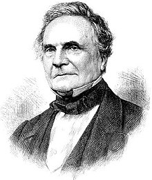

La primera máquina de calcular mecánica, un precursor del ordenador digital, fue inventada en 1642 por el matemático francés Blaise Pascal. Aquel dispositivo utilizaba una serie de ruedas de diez dientes en las que cada uno de los dientes representaba un dígito del 0 al 9. Las ruedas estaban conectadas de tal manera que podían sumarse números haciéndolas avanzar el número de dientes correcto. En 1670 el filósofo y matemático alemán Gottfried Wilhelm Leibniz perfeccionó esta máquina e inventó una que también podía multiplicar.
Joseph Marie Jacquard
El inventor francés Joseph Marie Jacquard, al diseñar un telar automático, utilizó delgadas placas de madera perforadas para controlar el tejido utilizado en los diseños complejos. Durante la década de 1880 el estadístico estadounidense Herman Hollerith concibió la idea de utilizar tarjetas perforadas, similares a las placas de Jacquard, para procesar datos. Hollerith consiguió compilar la información estadística destinada al censo de población de 1890 de Estados Unidos mediante la utilización de un sistema que hacía pasar tarjetas perforadas sobre contactos eléctricos.
Charles Babbage

También en el siglo XIX el matemático e inventor británico Charles Babbage elaboró los principios de la computadora digital moderna. Inventó una serie de máquinas, como la máquina diferencial, diseñadas para solucionar problemas matemáticos complejos. Muchos historiadores consideran a Babbage y a su socia, la matemática británica Augusta Ada Byron (1815-1852), hija del poeta inglés Lord Byron, como a los verdaderos inventores de la computadora digital moderna. La tecnología de aquella época no era capaz de trasladar a la práctica sus acertados conceptos; pero una de sus invenciones, la máquina analítica, ya tenía muchas de las características de un ordenador moderno. Incluía una corriente, o flujo de entrada en forma de paquete de tarjetas perforadas, una memoria para guardar los datos, un procesador para las operaciones matemáticas y una impresora para hacer permanente el registro.